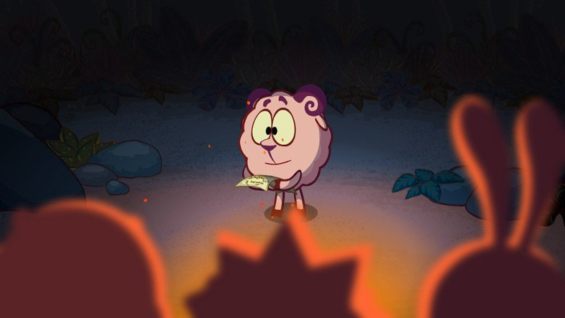

Барашу мешают все друзья. Он не может сочинить ни одного стишка, из-за чего у него происходит нервный срыв, и небо его уносит на далекий необитаемый остров. Здесь у него появляется вдохновение, и он пишет, и пишет, и пишет. Только потом он осознал, что на самом деле некому было писать, он ведь один. Поэтому делает из фруктов воображаемых друзей, которые его никак не слушает. После понятия своего положения, он еще пытается что-либо придумать, но все безуспешно. Он посылает кокос "SOS", тем самым прося о помощи. В последние дни ему как-то приснился сон, что его нашли друзья, но мертвым. В конце концов друзья его все же находят, отдаленного от общества.
Эта серия показывает, что каждый имеет право на одиночество, но на такое одиночество, при котором будут присутствовать люди, которые смогут помочь в крайней ситуации. Не стоит себя ограничивать от людей полностью и на долгое время, так как человек без общества уже не человек